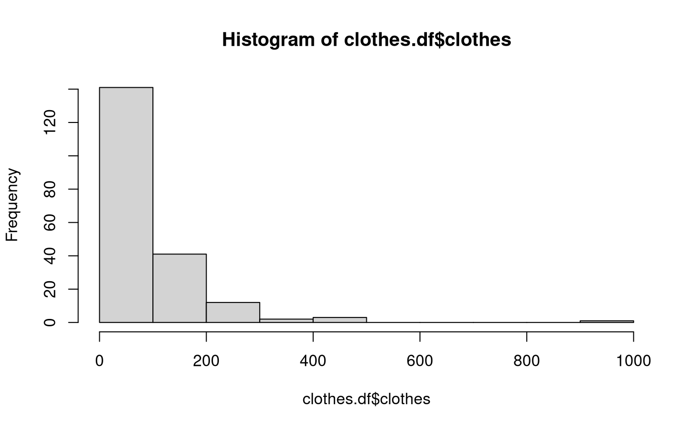
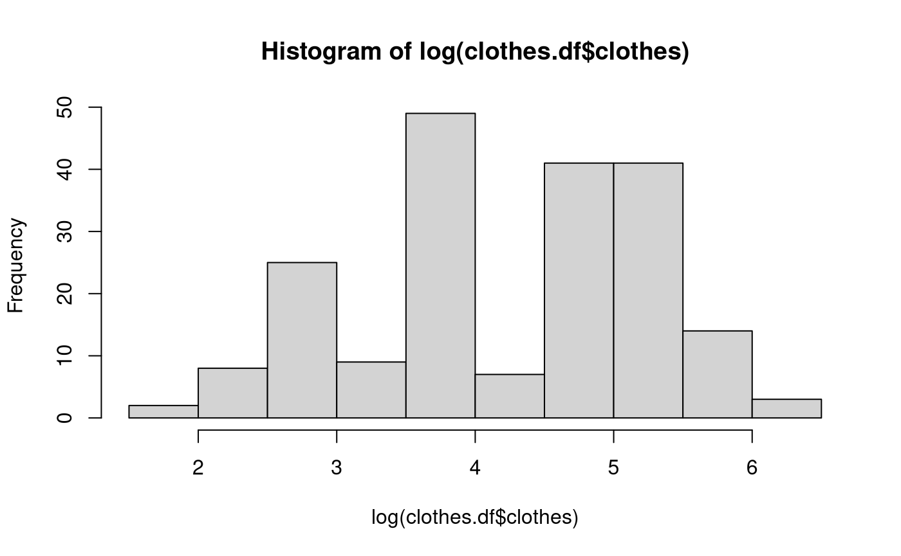
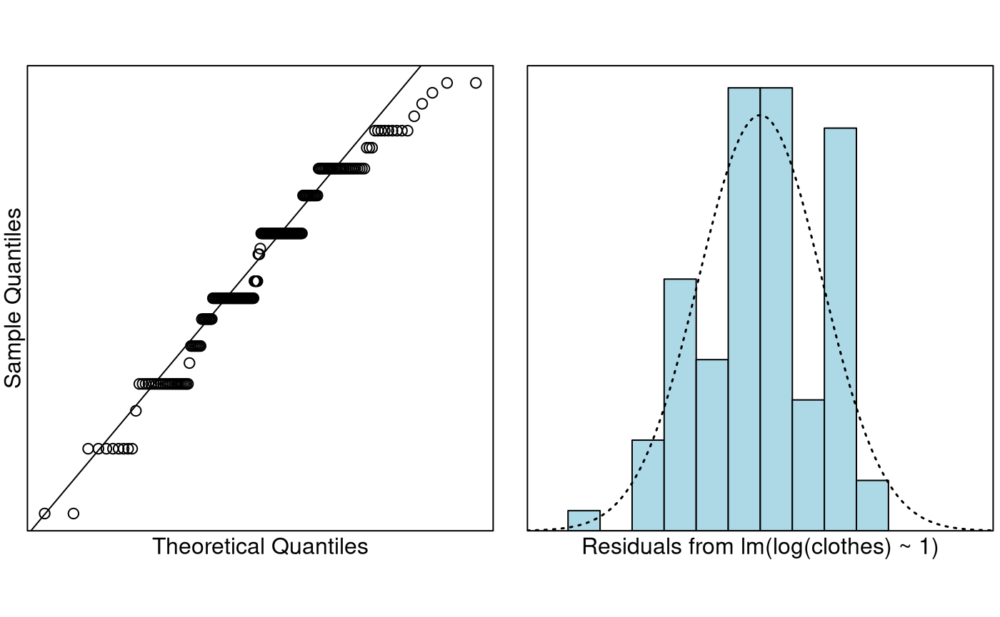
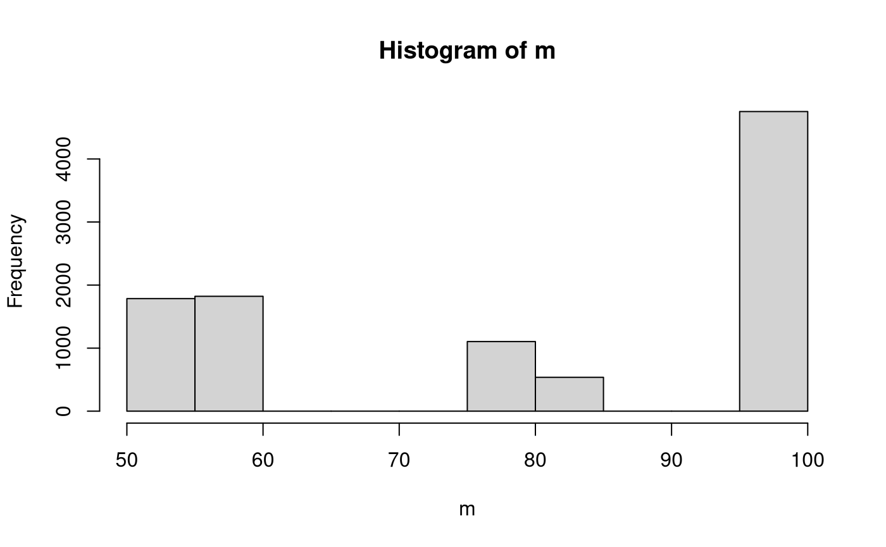
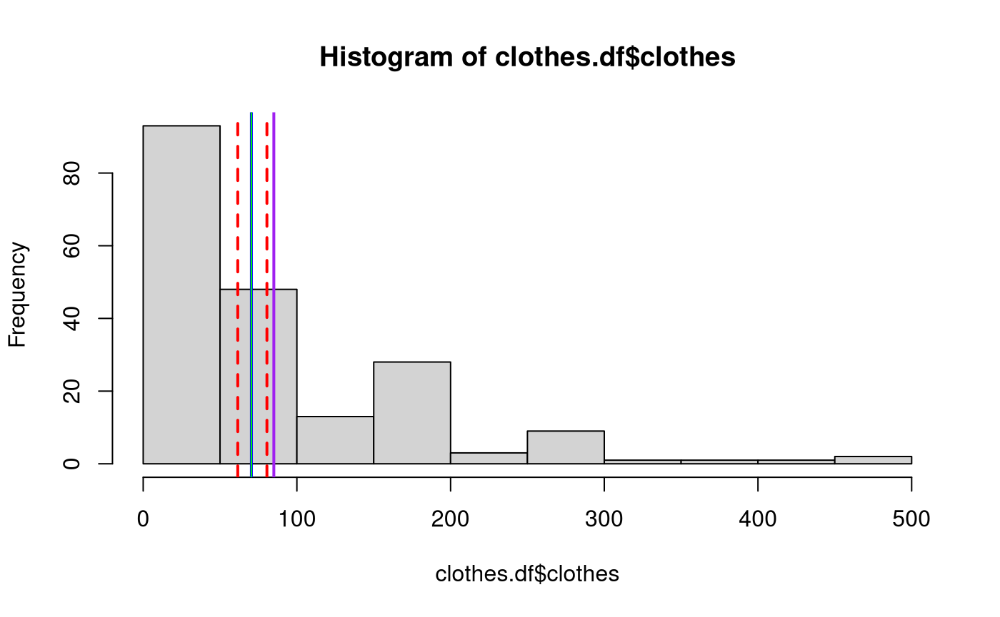

Problem
The question of interest is “How much money do students spend on
clothing on average?” This information was also recorded in the survey
discussed in Case Study 6.2. A variety of variables were measured
including clothes.
The variables of interest are:
-
clothes: The student’s estimated estimated monthly expenditure on clothing.
Read in and Inspect the Data
survey.df = read.table("survey.txt", header = TRUE)
# To make things a little less cluttered we put the data in its own dataframe.
clothes.df = with(survey.df, data.frame(clothes = clothes))
hist(clothes.df$clothes)
We can see the data is quite right-skewed. With data this skewed the median looks to be a better measure of centre. Logging the data should help. It also looks like there is one really “silly” value. Maybe we should omit it?
subset(clothes.df, clothes > 800)## clothes
## 15 999.99This is clearly a “joke.” Let’s remove it from further analysis. It isn’t likely to have much effect, but we don’t believe it is a genuine answer, so we might as well remove it.

Perhaps it makes the data more symmetric, but it is normal? There are multiple modes here. Let’s see what happens if we ignore this.
Model Building and Check Assumptions

How about normality? Lots of repeated values—this shows up as the “step” pattern in the Q-Q plot, and multiple modes in the residual plot. But the CLT will save us right?
## [1] 85
est## (Intercept)
## 70.38002
ci## 2.5 % 97.5 %
## (Intercept) 61.53073 80.502Oh dear! Our sample median is outside of our confidence interval for
the median. Maybe we should forget the normal theory and try
bootstrapping? Note: to perform this next step you need
to install the bootstrap package. You can do this by
uncommenting (removing #) the first line in the R chunk
below. You only have to do this one time, and then it is installed
forever more. So put back the # after knitting the document
for the first time.
# install.packages("bootstrap")
library(bootstrap)
m = bootstrap(clothes.df$clothes, 10000, median)$thetastar
quantile(m, c(0.025, 0.975))## 2.5% 97.5%
## 50 100Well that’s better, but is it? This is our distribution of bootstrapped medians.
hist(m)
Would you be happy giving a confidence interval on this? Probably not. This is why we said the inference is approximate. When we make inference on the back-transformed logged data, we’re really making inference about the geometric mean. This is defined as In practice it is calculated by It is not hard to show that these two are algebraically equivalent, but the second formula is less susceptible to computational overflow, which happens when numbers get too big. This will always happen for a big enough sample size, assuming that most of the s are greater than 1.
So we need to briefly check out whether inference about the geometric mean makes more sense. R doesn’t have this function built-in, so we need to define it.
All we need to do is make sure that our geometric mean is a) within the confidence limits, and b) in the same position on the original scale.
hist(clothes.df$clothes)
abline(v = est, col = "blue", lwd = 2)
abline(v = ci, col = "red", lty = 2, lwd = 2)
# If this is correct, then the blue line should be replaced by a green line
# I've made it width 1, so you might be able to see it is right in the middle
# of the estimate, exactly where it should be
abline(v = geomean(clothes.df$clothes), col = "green")
# This is the median
abline(v = median(clothes.df$clothes), col = "purple", lwd = 2)
The geometric mean seems more appropriate here. So this example emphasizes that we really need the data to be normal on the log-scale for this approximate inference to work. Note that it works for the geometric mean regardless, but this is not examinable in this course.